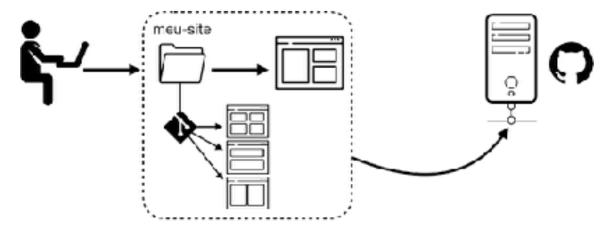

Git e GitHub
O que é um repositório?
É um local onde seu projeto fica hospedado. Existem dois tipos de repositórios, os Repositórios Locais e os Repositórios Remotos.
Qual a utilidade de um repositório?
Para exemplificar o uso de cada um dos tipos de repositórios serão citados abaixo algumas histórias para exemplificar seu uso.
-
Como Guardar várias versões do seus site?
Quando estamos criando um projeto, começamos aos poucos criando sua primeira versão dentro de uma pasta local em nosso computador.
Quando atingir uma versão estável, para manter um "backup seguro", sempre usamos ideias brilhantes como gerar uma versão compactada dessa pasta. Isso vai permitir continuar a desenvolver uma versão aprimorada sem perder a versão anterior. Se por acaso algo der errado basta descompactar nosso arquivo de versão estável, substituir o conteúdo da pasta original e recomeçar os trabalhos da criação da próxima versão. Usando essa prática, com certeza vai acabar se deparando com vários arquivos ZIP com nomes esquisitos.
-
O HD foi pro saco, o que fazer?
Se usarmos a técnica do exemplo anterior, é possível que todos os arquivos sejam perdidos cado o HD seja queimado.
Uma das sáidas é salvar cópias de segurança em pendrivez e em HDs externos, além de manter um backup em serviços de armazenamento como Dropbox, Google Drive, One Drive, iCloud, etc.
O problema de manter esses backups isolados é que, no momentos de ligar nossa "máquina do tempo" e voltar para a versão anterior, precisamos fazer o download do ZIP desejado e substituir manualmente a versão atual para a última estável.
-
Mostrar seu site para o mundo
O que você faz caso queira mostrar seu projeto de um site para um amigo, seu professor, ou até mesmo um possível cliente? Vai mandar o link de um arquivo ZIP para ele(a) baixar, descompactar e abrir no navegador local? Não é dess aforma que as pessoas estão acostumadar a acessar sites.
Os serviços de armazenamento citador na situação anterior são muito úteis para fazer backup, mas possume uma grande limitação quando queremos praticidade. Por exemplo, salvar os arquivos de um site no Dropbox não vai garantir de forma alguma que el vai ficar disponível para o acesso externo. Ninguém vai poder "acessar seu site"l, apenas digitando uma URL no navegador. Tudo vai ficar armazenado como um grupo de arquivos, não como um site hospedado.
Os repositórios vão resolver isso
Todas as três situações descritas podem ser resolvidas com repositórios locais/remotos de maneira muito simples. E se por acaso você já tentou aprender sobre isso, achou guias com dezenas de comandos e não conseguiu se adaptar, saiba que tudo evoluiu muito nos últimos meses e vamos ter tudo de maneira muito simples, sem decorar nenhum comando! Para começar, vamos aprender que existem dois tipos de repositórios: os locais e os remotos.
Tipos de Repositórios
Repositório Local
Um repositório local tem esse nome porque vai estar sempre no seu computador. A função dele é facilidade a gestão de diversas versões do seu projeto de forma simples e automática.
Lembra da situação 1 que descrevemos anteriormente? Pois quando instalamos um Sistema de Controle de Versões (do inglês Version Control System - VCS), deixamos a responsabilidade por gerenciar as versões dos nossos projetos nas mãos de um software especializado, que vai fazer tudo automaticamente e vai permitir que você volte a qualquer ponto no momento em que achar melhor.
Um dos softwares VCS mais famosos é o Git, feito por Linus Torvalds, o mesmo criador do núcleo Linux dos sistemas operacionais. O sistema do Git foi criado no ano de 2005 em poucos dias (10 dias, para ser mais exato), por conta de uma briga entre o Linus e o criador de um software chamado BitKeeper, que era utilizado para gerenciar as versões em desenvolvimento do Linux.
O esquema de funcionamento do Git é totalmente focado no nosso computador. Analisando a imagem a seguir, vemos que o software está
monitorando uma pasta chamada meu-site que tem a versão atual do projeto e uma pasta especial chamada .git com
várias versões pelas quais o site passou durante sua evolução.
A grande vantagem de usar um sistema de controle de versões como o Git é poder voltar a qualquer momento para qualquer versão anterior do projeto de forma imediata, tudo 100% transparente para o programador.
Como você já deve ter percebido, os repositórios locais resolvem o problema que apontamos na situação 1, mas se o nosso PC quebrar (situação 2) ou se quisermos mostrar o projeto para outra pessoa (situação 3), ainda não é possível usando esse tipo de sistema, mas não se desespere agora! Continue lendo...
Repositório Remoto
Para solucionar os problemas levantados nas duas últimas situações desse capítulo, vamos precisar de um lugar na nuvem para guardar nossos repositórios locais. E é aí que entra o nosso segundo grande personagem: o GitHub.
Criado em 2008 por quatro amigos, o GitHub é um serviço que nos permite criar um repositório remoto na nuvem para guardar nossos projetos e versionamentos. Ele não é a única opção que existe no mercado (ainda temos o GitLab, o Bitbucket, e muitos outros) mas provavelmente é a mais popular, tanto que hoje pertence à gigante Microsoft, que comprou o serviço em 2018 por 7.5 bilhões de dólares.
Com o tempo, o GitHub começou a ganhar funcionalidades extras, que foram transformando o serviço em uma grande rede social para programadores. Além de guardamos nossos códigos nos servidores, podemos nos comunicar com outrso desenvolvedores e até mesmo colaborar com outros projetos que estão disponíveis publicamente para todos.
Ao colocar nossos códigos na nuvem, automaticamente resolvemos o problema da situação 2. E um recurso chamado GitHub Pages vai permitir a hospedagem gratuita de sites simples, que usem HTML + CSS + JS e disponibilize acesso através de uma URL.